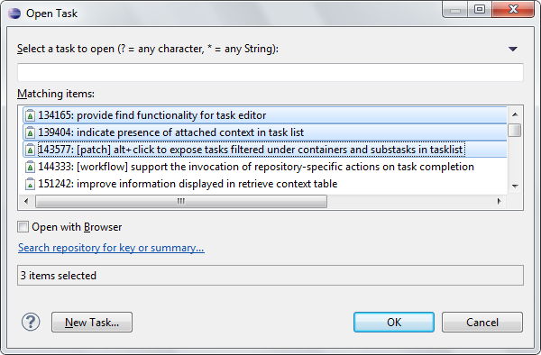
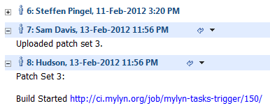
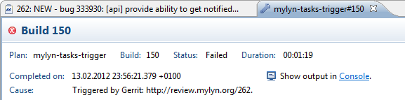
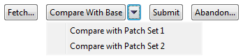
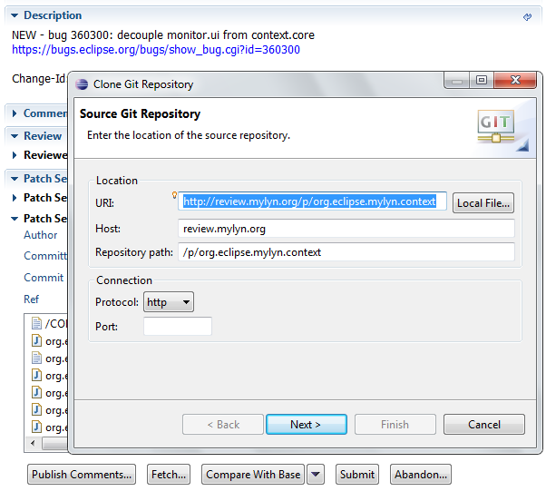
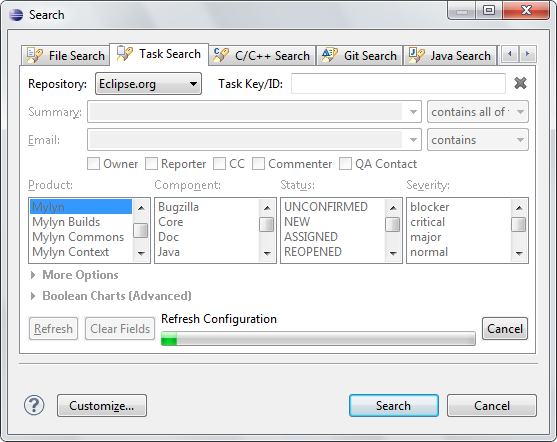

Gerrit Connector: Import Git Repositories
The Gerrit connector extends the EGit import wizard (File > Import > Projects from Git). A listing of all Git repositories from configured Gerrit repositories is provided to support simple cloning and importing of projects.

Tasks Framework: Open Multiple Tasks
The open task dialog (Ctrl+F12) support opening multiple tasks.

Hudson Connector: Links Open in Builds Editor
If a link that points to a Hudson build for a configured server is clicked it is opened in the build editor providing seamless integration between tasks, reviews and builds.


Commons Framework: URL Handler
The org.eclipse.mylyn.commons.ui bundle provides an extension point for registering handlers that open URLs in rich editors: bug 346046.
Gerrit Connector: Compare Patch Sets
The review editor show a button below each patch set to compare it with other patch sets.

Changes opened in the compare editor making it very easy to navigate through changed files. This replaces the Synchronize View integration.

Gerrit Connector: Links Patterns
Comment link patterns specified in the Gerrit configuration are hyperlinked in the task editor and publish dialog.

Bugzilla Connector: User Matching
If an invalid or incomplete user name is provided on task submission the task editor now provides a content assist that shows suggestions returned from Bugzilla.

Hudson Connector: Authentication Improvements
The Hudson connector now uses form-based authentication to support servers that have Cross Site Request Forgery prevention enabled. Additionally, the settings page now has a section for configuring certificate authentication.

Gerrit Connector: Repository Creation on Fetch
When fetching a change set from a Git repository that does not exist in the workspace a dialog is shown to automatically clone the repository.

Commons Framework: Restructuring and Deprecation
The Mylyn Commons components were restructured and provisional packages were promoted to API. Consumers are strongly encouraged to consume the new APIs for Mylyn 3.7 based extensions. See porting guide for more details.
Commons Framework: Improved Authentication APIs
The repositories framework now support OpenID, HTTP and certificate authentication: bug 317907.
Commons Framework: HttpCore Based Transport Layer
The org.eclipse.mylyn.commons.repositories.http.core bundle provides an HttpCore 4.1 based HTTP transport layer that replaces org.eclipse.mylyn.commons.net: bug 335254.
WikiText: Support for Creole
WikiText now support the Creole markup dialect. It is available as part of the WikiText extras feature from the WikiText nightly repository.
Task Editor: Filter Obsolete Attachments
The attachments section has a toolbar for filtering obsolete attachments.
Bugzilla Connector: Custom Priority Levels
Custom priority levels are mapped in the Task List.
Bugzilla Connector: Embedded Progress in Search Page
The progress bar for refreshing the repository configuration is embedded in the Bugzilla search page allowing to navigate while a refresh is in progress.

Trac Connector: Streamlined Search and Query Pages
The layout of the Trac query page has been streamlined and is more consistent with the Bugzilla query page.

Tasks: Improved Query Page API
An enhanced query and search page abstraction is available in AbstractRepositoryQueryPage2. Refresh and Clear buttons are provided by the framework for refreshing the repository configuration and clearing fields.
Additionally, state is automatically persisted for search pages. See bug 310059.
Hudson Connector: Hierarchical View of Artifacts
Kevin Sawicki contributed a patch that adds support for showing the folder hierarchy in the artifacts section of the build editor.

Gerrit Connector: Hyperlinking
Kevin Sawicki contributed a change that enables hyperlinking for references to Gerrit change IDs.

Additionally, URLs that reference Gerrit changes are opened in the review editor instead of the browser.

Gerrit Connector: Custom Queries
The query page has a field for specifying custom queries. This enables querying for all starred reviews for instance.

Gerrit Connector: Author Information for Patch Sets
The patch set sections shows author and commit information for each patch set.

Gerrit Connector: Gerrit 2.2
The connector supports Gerrit 2.2.1 in addition to Gerrit 2.1.8. This enables bootstrapping for contributions using the Mylyn Gerrit instance.
Gerrit Connector: OpenID Login
The Gerrit connector supports authentication through OpenID providers.
The password prompt is displayed in a browser window.

Tasks Framework: Task Activation Listener Extension Point
The Tasks framework has an extension point for registering task activation listeners: bug 349924.
Incubator: Query API for Desktop Search
The desktop search integration in the Incubator has API for constructing search queries: bug 354430.
Improved Content Assist
Content assist shows names for known users and matches on first and last name.
Reordered Task Editor Sections
Private notes are displayed above the description.